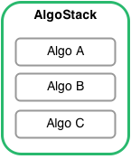

Algorithms¶
Overview¶
One of the core building blocks of bt is the Algo and the
closely related AlgoStack.

Algos¶
An Algo is essentially a function that returns True or False. It takes a single
argument that is the Strategy being tested. An Algo should ideally
only serve one specific purpose. This purpose can control execution flow, it can
control security selection, security allocation, etc. For example,
you can have an Algo that checks if the month has changed (such as
bt.algos.RunMonthly). If it has, this Algo return True, if not, False.
Algo Stacks¶
An AlgoStack is a class that groups together many
Algos and runs them one after another as long as each Algo returns True. As soon
as an Algo returns False, the AlgoStack stops its execution and returns False
(an AlgoStack is an Algo after all). This allows us to combine different Algos
together and control the flow of execution with the Algo return value. Many
AlgoStacks can they themselves be included into another AlgoStack should the
need arise.
By breaking down strategy logic into these small blocks of code, we achieve testability and reusability - two appealing features when working on software development.
Data Passing¶
In order to pass data between different Algos, the Strategy has two properties: temp and perm. They are both dictionaries and are used for storing data generated by Algos. Temporary data is refreshed on each data change whereas permanent data is not altered.
Algos usually set and/or require values in the temp or perm objects. For example,
the bt.algos.WeighEqually Algo sets the ‘weights’ key in temp, and
it requires the ‘selected’ key in temp.
For example, let’s take a simple select -> weight -> allocate logic chain. We would break this strategy up into 3 Algos:
selection Which securities do I want to allocate capital to out of the entire universe of investable assets? See, i.e.
SelectAll,SelectThese,SelectWhere,SelectN, etcweighting How much weight should each of the selected securities have in the target portfolio? See, i.e.
WeighEqually,WeighRandomlyWeighSpecified,WeighTarget,WeighInvVol,WeighMeanVar, etcallocate Close out positions that are no longer needed and allocate capital to those that were selected and given target weights. See, i.e.
Rebalance
In this case, the selection Algo could set the ‘selected’ key in the strategy’s temp dict, and the weighting Algo could read those values and in turn set the ‘weights’ key in the temp dict. The allocation Algo would then read the ‘weights’ and act accordingly.
To extend the simple select -> weight -> allocate logic chain to include an additional
risk/exposure calculation step, one would do this by implementing specific Algos
for this purpose. These could be used either before weighting
(for risk-based portfolio construction) or after
(for reporting). See, e.g. UpdateRisk.
To preserve maximal flexibility, there are currently no checks to make sure the AlgoStack is valid. Therefore, it is up to the user and creator of Algos to make sure the requirements and side effects are well documented and properly used (by the way, this may not be a great way to go about this problem. If you have a better idea, please let me know!).
Developers should add a section in the docstring that outlines
the “sets” and the “requires”. See the docstrings of
bt.algos.WeighEqually for an example.
Implementation¶
In most cases, Algos must preserve some kind of state. In this case, it is easier to implement them as classes and define the __call__ method, like below:
class MyAlgo(bt.Algo):
def __init__(self, arg1, arg2):
self.arg1 = arg1
self.arg2 = arg2
def __call__(self, target):
# my logic goes here
# accessing/storing variables through target.temp['key']
# remember to return a bool - True in most cases
return True
Note that the attributes on the class should not be specific to any particular target.
However, for Algos that do not need to preserve any state, you may simply implement them as a basic function that takes one argument - the Strategy:
def MyAlgo2(target):
# all the logic
return True
Best Practices¶
Re-usability¶
Recall that Algos should be reusable across different backtests (including backtests on different underlying security universes or different time ranges), and that a Backtest is the logical combination of the strategy and the data. However, there are cases when the Algo needs to use some extra data that does depend on the security universe or time range (i.e. a data frame of signals that has been pre-computed).
The best way to handle this is to construct the Algo with the name of the data, and to instantiate the backtest with this named data:
class MyAlgo(bt.Algo):
def __init__(self, signal_name ):
self.signal_name = signal_name
def __call__(self, target):
# my logic goes here
# accessing data via target.get_data( self.signal_name )
# remember to return a bool - True in most cases
return True
# create the strategy
s = bt.Strategy('s1', [bt.algos.MyAlgo( 'my_signal' )])
# create a backtest and run it
test = bt.Backtest(s, data, additional_data={'my_signal':signal_df})
res = bt.run(test)
# Run the same strategy on different data without changing MyAlgo
test = bt.Backtest(s, data2, additional_data={'my_signal':signal_df2})
res = bt.run(test)
Note that some additional data keys are used by the framework itself to support
additional functionality (i.e. bidoffer, coupon, cost_long and
cost_short). These are documented in the setup functions of
Security and
CouponPayingSecurity.
Debugging¶
The easiest way to debug algos is by adding leveraging one of the existing debug algos or by writing your own! Just insert them in the appropriate places in your algo stack, and add breakpoints to examine the state of the passed strategy.
Branching and Control Flow¶
While the Algo setup may seem overly simple (a list of functions which returns
either True or False), this is a powerful construct that allows for complex
branching and conditional structures. In particular, branching is achieved via
the Or Algo.
For example, the code below illustrates how printing of strategy performance can occur on a different timeline from rebalancing the portfolio. Additional conditions can be added by placing those algos at the head of the relevant stack.
import bt
data = bt.get('spy,agg', start='2010-01-01')
# create two separate algo stacks and combine the branches
logging_stack = bt.AlgoStack(
bt.algos.RunWeekly(),
bt.algos.PrintInfo('{name}:{now}. Value:{_value:0.0f}, Price:{_price:0.4f}')
)
trading_stack = bt.AlgoStack(
bt.algos.RunMonthly(),
bt.algos.SelectAll(),
bt.algos.WeighEqually(),
bt.algos.Rebalance()
)
branch_stack = bt.AlgoStack(
# Upstream algos could go here...
bt.algos.Or( [ logging_stack, trading_stack ] )
# Downstream algos could go here...
)
s = bt.Strategy('strategy', [branch_stack], ['spy', 'agg'])
t = bt.Backtest(s, data)
r = bt.run(t)